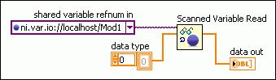

By accessing the channels of an I/O variable container as a single array, you can optimize performance and streamline the block diagram. Use the Shared Variable functions to read and write local I/O variable containers as arrays.
An I/O variable container is an item in a LabVIEW project that contains I/O variables. Use one of the following methods to specify an I/O variable container to read or write on the block diagram:
You can wire a reference to an I/O variable container to the shared variable refnum in input of one of the following functions:
When you use one of the read functions in the previous list to read an I/O variable container, the function returns an array that contains the data for each channel in the I/O container. The order of the channels in the array corresponds to the order of the channels that the All Variables property returns. When you use one of the write functions in the previous list to write an I/O variable container, you must wire an array indexed in this same order.
For example, the following block diagram uses the Scanned Variable Read function to read all the I/O channels in the analog input module Mod1 as an array of doubles:

The techniques described in this topic do not support the following features:
| Unsupported Feature | Details |
|---|---|
| Reading and writing I/O variable containers that include multiple data types | You can specify only one data type for an I/O variable container. Therefore, reading or writing an I/O variable container with channels of multiple data types results in an error. |
| Reading and writing PSP variable containers | This technique applies only to local I/O variable containers. You cannot use this technique to access I/O variable containers remotely or to access network-published shared variable libraries. |
| Reading timestamps | You cannot enable timestamps when using this technique. |